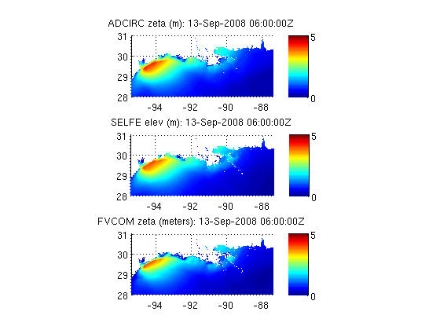

TEST_CF_UGRID3
Compare water levels from 3 different unstructured grid models that use UGRID conventions (http://bit.ly/cf_ugrid), allowing comparison with no model specific code
Contents
Datasets
ADCIRC
titl{1}='ADCIRC';
uris{1}='http://testbedapps-dev.sura.org/thredds/dodsC/in/und/adcirc/ike/ultralite/lr/vardrag/nowave/3d';
vars{1}='zeta';
time=[2008 9 13 06 0 0];
%%% SELFE
titl{2}='SELFE';
uris{2}='http://testbedapps.sura.org/thredds/dodsC/inundation/selfe/ike/3Dvrwoww';
vars{2}='elev';
%%% FVCOM
titl{3}='FVCOM';
uris{3}='http://testbedapps.sura.org/thredds/dodsC/inundation/FVCOM/ike/3Dvrwoww';
vars{3}='zeta';
Setup figure parameters
bounding box for figures
ax=[-95.4519 -87.3856 28.0 31.0];
%%% color range for figures
cax=[0 5];
There is nothing model specific in the loop below!
for i=1:length(uris) tic % Initialize dataset object nc=ncgeodataset(uris{i}); %get geovariable object zvar=nc.geovariable(vars{i}); % Find the coordinate variables lon=zvar.getlondata(:); lat=zvar.getlatdata(:); tdat=zvar.timewindowij(time); itime=tdat.index; % read data at specified time step for all nodes zeta=zvar.data(itime,:); % get mesh variable name (inference array) gvar_name=zvar.attribute('mesh'); gridvar=nc.geovariable(gvar_name); % find connectivity array variable from mesh variable trivar_name=gridvar.attribute('face_node_connectivity'); % get connnectivity array data tri=nc{trivar_name}(:); [m,n]=size(tri); % check/fix orientation of connectivity array if m==3, tri=tri.'; elseif n~=3 disp('Error:Currently handling triangles only');return end subplot(length(uris),1,i) trisurf(tri,lon,lat,zeta);shading interp;view(2);colorbar;... axis(ax);caxis(cax);... title(sprintf('%s %s (%s): %sZ',titl{i},vars{i},... zvar.attribute('units'),datestr(tdat.time)));... % set aspect ratio for lon/lat plot based on mean latitude set (gca, 'DataAspectRatio', [1 cos(mean(lat(:))*pi/180) 1] ); toc end
Elapsed time is 72.348191 seconds. Elapsed time is 75.959380 seconds. Elapsed time is 66.551909 seconds.